1088C40 THERMOSTAT- R + R
- Path
- Procedures > 10 ENGINE UNIT > 1088 ENGINE COOLING > 1088C WATER PUMP AND THERMOSTAT > 1088C40 THERMOSTAT- R + R
- Kind
- repair procedure (removal / refitting; the operation number is the code)
- Applies to
- all engines; all production periods
- Interactive page
- https://sloeber94.github.io/elrnDB-aGt/en/#/125001181
Applies to: engines: 2.0 JTS; all production periods
 Removing
Removing
 Refitting
RefittingPosition the vehicle on the ramp
Ensure that the ignition key is in the OFF position, then disconnect the negative battery terminal (-).
Name | Connector | |
|---|---|---|
- | Battery | See A1B BATTERY ( BATTERY NEGATIVE ) |
Proceed with removal
Op. 1016A40 IGNITION COIL COVER ON CYLINDER HEAD- R+R
Proceed with removal
Proceed with removal
Op. 1048A59 PIPE from flow meter to throttle casing hose - R.R.
Proceed with removal
1. Disconnect the lower coolant outlet hose from the radiator and drain the engine coolant.
Op. 7055B54 UNDER-ENGINE GUARD - R R
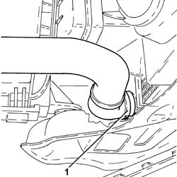
Applies to: engines: 2.0 JTS; all production periods
1. Disconnect the electrical connection from the engine coolant temperature sensor.
Name | Connector | |
|---|---|---|
1 | Engine temperature sender unit | See K36 ENGINE TEMPERATURE SENDER UNIT ( CONNECTORS ) |
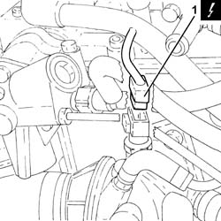
Applies to: engines: 2.0 JTS; all production periods
1. Loosen the band and disconnect the coolant return pipe from the engine coolant reservoir, thermostat side.
2. Loosen band and disconnect the upper coolant inlet hose to the radiator, thermostat side.
3. Loosen the band and disconnect the coolant return pipe to the climate control heater, thermostat side.
4. Loosen the band and disconnect the engine oil heat exchanger flexible coolant supply pipe, rigid pipe side.
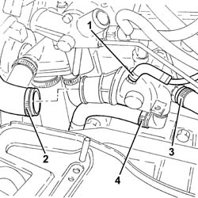
Applies to: engines: 2.0 JTS; all production periods
1. Undo the bolts (1a) and remove the thermostat (1b), complete with engine coolant temperature sensor (1c) and O-Ring (1d).
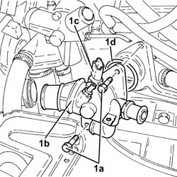
Applies to: engines: 2.0 JTS; all production periods
Refitting
Removing1. Place the thermostat (1a), complete with engine coolant temperature sensor (1b) and O-Ring (1c) back in its housing and secure it by tightening the bolts (1d) to the recommended torque.
 | Fastening | Component | Ø | Value (daNm) |
|---|---|---|---|---|
1d | Bolt | THERMOSTAT | M8 | (Cylinder head side) 2.3 ÷ 2.8 |
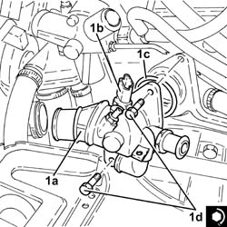
Applies to: engines: 2.0 JTS; all production periods
Connect the coolant supply pipe to the engine oil heat exchanger, thermostat side, and tighten the band.
Connect the engine coolant return pipe from the climate control system heater, thermostat side, and tighten the band.
Connect the upper coolant inlet hose to the radiator, thermostat side, and tighten the band.
Connect the engine coolant return pipe to the supply reservoir, thermostat side and tighten the band.
Connect the electrical connection to the engine coolant temperature sensor.
Connect the rapid attachment for the bottom coolant outlet hose from the radiator.
Proceed with refitting
Op. 7055B54 UNDER-ENGINE GUARD - R R.
Proceed with refitting
Proceed with refitting
Op. 1048A59 PIPE from flow meter to throttle casing hose - R.R..
Proceed with refitting
Op. 1016A40 IGNITION COIL COVER ON CYLINDER HEAD- R+R.
Connect the negative (-) battery terminal
Refill the engine cooling system with coolant
Op. 0010T20 COOLANT CHECK DENSITY AND TOP UP IF NECESSARY.
Remove the car from the ramps.
Applies to: engines: 3.2 V6; all production periods
Removing
RefittingPosition the vehicle on the ramp
Proceed with removal
Op. 7055B54 UNDER-ENGINE GUARD - R R
1. Press the two rapid attachment clips, by hand, and disconnect the lower coolant outlet hose from the radiator, radiator side.
Connect the rapid attachment for the lower coolant outlet hose to the radiator, radiator side.
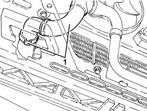
Applies to: engines: 3.2 V6; all production periods
Proceed with removal
1. Disconnect the electrical connection from the engine coolant temperature sensor.
2. Open the electrical connections box.
Name | Connector | |
|---|---|---|
1 | Engine temperature sender unit | See K36 ENGINE TEMPERATURE SENDER UNIT ( CONNECTORS ) |
3. Extract the electrical connections and the wiring from the electrical connections box.
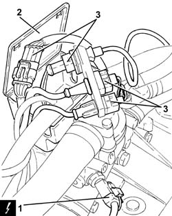
Applies to: engines: 3.2 V6; all production periods
1. Loosen band and disconnect the upper coolant inlet hose to the radiator, thermostat side.
2. Loosen the band and disconnect the lower radiator coolant outlet hose from the radiator, thermostat side.
3. Loosen the band and disconnect the coolant supply pipe from the climate control heater, thermostat side.
4. Undo the bolts (4a) and remove the thermostat (4b) complete with electrical connections box (4c).
At the bench, separate the thermostat from the electrical connections box.
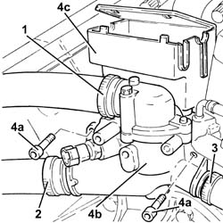
Applies to: engines: 3.2 V6; all production periods
Refitting
RemovingAssemble the thermostat and the electrical connections box.
1. Place the thermostat (1a) back in its housing complete with electrical connections box (1b) and secure it tightening the bolts (1c) to the recommended torque.
| Fastening | Component | Ø | Value (daNm) |
|---|---|---|---|---|
1c | Bolt | THERMOSTAT | M6 | (Cylinder head side) 0.8 ÷ 1.0 |
2. Connect the engine coolant return pipe from the climate control system heater, thermostat side, and tighten the band.
3. Connect the lower coolant outlet hose from the radiator, thermostat side, and tighten the band.
4. Connect the upper coolant inlet hose to the radiator, thermostat side, and tighten the band.
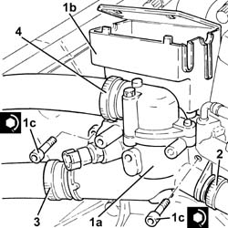
Applies to: engines: 3.2 V6; all production periods
Place the electrical connections and the wiring in their housings in the electrical connections box.
Connect the electrical connection to the engine coolant temperature sensor.
Proceed with refitting
Refill the engine cooling system with coolant
Op. 0010T20 COOLANT CHECK DENSITY AND TOP UP IF NECESSARY.
Proceed with refitting
Op. 7055B54 UNDER-ENGINE GUARD - R R.
Remove the car from the ramps.
Applies to: engines: 1.9 JTD 16V; all production periods
Removing
RefittingPosition the vehicle on the ramp
Proceed with removal
- 1016A10 sound-proofing cover - r + r
Proceed with removal
Proceed with removal
Proceed with removal
1. Loosen the band and disconnect the coolant return pipe from the engine coolant reservoir, thermostat side.
Op. 5530B52 BATTERY DRIP TRAY/SUPPORT - R.R.
2. Loosen the band and disconnect the upper coolant inlet hose to the radiator, thermostat side.
3. Loosen the band and disconnect the coolant return pipe to the climate control heater, thermostat side.
Op. 7055B54 UNDER-ENGINE GUARD - R R
4. Loosen the band and disconnect the coolant supply pipe to the water/exhaust gas heat exchanger for the E.G.R. system, thermostat side.
5. Disconnect the electrical connection from the engine coolant temperature sensor.
Name | Connector | |
|---|---|---|
5 | Engine temperature sender unit | See K36 ENGINE TEMPERATURE SENDER UNIT ( CONNECTORS ) |
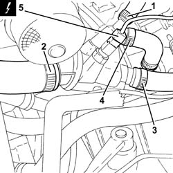
Applies to: engines: 1.9 JTD 16V; all production periods
1. Undo the bolts (1a) and remove the thermostat (1b) complete with O-Ring (1c).
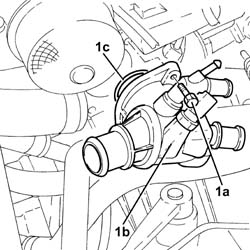
Applies to: engines: 1.9 JTD 16V; all production periods
Refitting
Removing1. Refit thermostat (1a), complete with O-ring (1b) and secure by tightening the bolts (1c) to the recommended torque.
| Fastening | Component | Ø | Value (daNm) |
|---|---|---|---|---|
1c | - | - | - | - |
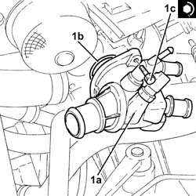
Applies to: engines: 1.9 JTD 16V; all production periods
Connect the electrical connection to the engine coolant temperature sensor.
Connect the engine coolant supply pipe to the EGR system water/exhaust gas heat exchanger, thermostat side and tighten the band.
Connect the engine coolant return pipe from the climate control system heater, thermostat side, and tighten the band.
Connect the upper coolant inlet hose to the radiator, thermostat side, and tighten the band.
Connect the engine coolant return pipe to the supply reservoir, thermostat side and tighten the band.
Proceed with refitting
Op. 7055B54 UNDER-ENGINE GUARD - R R.
Proceed with refitting
Op. 5530B52 BATTERY DRIP TRAY/SUPPORT - R.R..
Proceed with refitting
Refill the engine cooling system with coolant
Op. 0010T20 COOLANT CHECK DENSITY AND TOP UP IF NECESSARY.
Proceed with refitting
- 1016A10 sound-proofing cover - r + r
.
Remove the car from the ramps.
Applies to: engines: 1.8 T.SPARK; all production periods
Removing
RefittingPosition the vehicle on the ramp.
Ensure that the ignition key is in the OFF postition, then disconnect the battery negative terminal.
Name | Connector | |
|---|---|---|
- | Battery | See A1B BATTERY ( CONNECTORS ) |
1. Disconnect the lower coolant outlet hose from the radiator and drain the engine coolant.

Applies to: engines: 1.8 T.SPARK; all production periods
1. Disconnect the electrical connection from the air flow meter.
Name | Connector | |
|---|---|---|
1 | Air flow meter | See K41 AIR FLOW METER ( CONNECTORS ) |
Disconnect the electrical wiring for the flow meter from the fastening on the air intake sleeve.
2. Disconnect the oil vapour recirculation pipe from the air intake duct.
3. Undo the bolts (3a) and remove the air intake hose (3b) complete with air flow meter (3c).

Applies to: engines: 1.8 T.SPARK; all production periods
1. Disconnect the electrical connection from the engine coolant temperature sensor.
Name | Connector | |
|---|---|---|
1 | Engine temperature sender unit | See K36 ENGINE TEMPERATURE SENDER UNIT ( ENGINE ) |
2. Disconnect the coolant return pipe to the climate control heater, thermostat side.
3. Disconnect the coolant return pipe to the engine coolant reservoir, thermostat side.
4. Disconnect the upper coolant inlet hose to the radiator, thermostat side.
5. Disconnect the coolant supply pipe to the engine oil heat exchanger, thermostat side.
6. Undo the bolts (6a) and remove the thermostat (6b) complete with gasket.
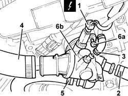
Applies to: engines: 1.8 T.SPARK; all production periods
Refitting
RemovingPlace the thermostat, complete with gasket, back in its housing and fix it tightening the bolts to the recommended torque.
Fastening | Component | Ø | Value (daNm) | |
|---|---|---|---|---|
- | Bolt | THERMOSTAT | M8 | (Cylinder head side) 2.3 ÷ 2.8 |
Connect the coolant supply pipe to the engine oil heat exchanger, thermostat side.
Connect the upper coolant inlet hose to the radiator, thermostat side.
Connect the coolant return pipe to the engine coolant reservoir, thermostat side.
Connect the coolant supply pipe to the climate control heater, thermostat side.
Connect the electrical connection to the engine coolant temperature sensor.
Refit the air intake hose with air flow meter and secure with collars.
Connect the oil vapour recirculation pipe to the air intake duct.
Connect the electrical connection to the air flow meter and secure the electrical wiring to the fastening on the air intake sleeve.
Connect the lower coolant outlet hose to the radiator.
Connect the battery terminal (-).
Refill the engine cooling system with coolant
Op. 0010T20 COOLANT CHECK DENSITY AND TOP UP IF NECESSARY
.
Remove the car from the ramp.
Topics linked from this page (6)
- 0010T20 COOLANT CHECK DENSITY AND TOP UP IF NECESSARY
- 1016A40 IGNITION COIL COVER ON CYLINDER HEAD- R+R
- 1048A59 PIPE from flow meter to throttle casing hose - R.R.
- 5530B10 BATTERY - R+R
- 5530B52 BATTERY DRIP TRAY/SUPPORT - R.R.
- 7055B54 UNDER-ENGINE GUARD - R R